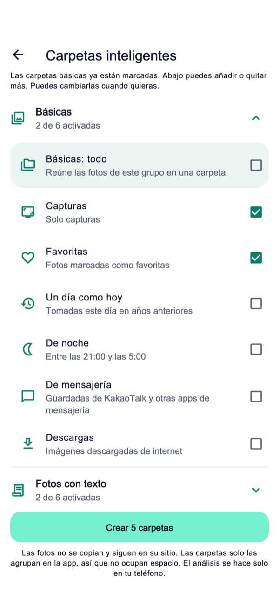
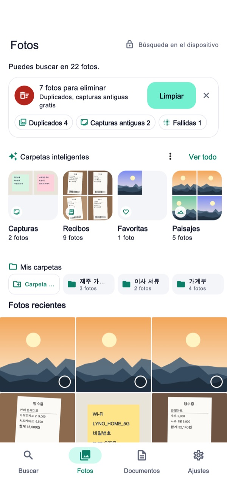

Novedades
1. Un grupo entero en una carpeta · Carpetas de grupo
En «Elegir carpetas», abre un grupo y activa su primera fila, como «Aficiones y deporte: todo». Las fotos de todas sus carpetas se reúnen en una sola, cada foto una vez.

2. Busca por nombre de carpeta
Escribe el nombre de una carpeta inteligente activada y sus fotos aparecerán debajo de los resultados. Escribe dos o tres separados por espacios para ver solo las fotos que están en todas.
Ejemplos: perro playa atardecer
3. 38 carpetas inteligentes
Actívalas en Fotos → Activar carpetas inteligentes (o Elegir carpetas). Nuevas en esta versión: Atardeceres, Vistas nocturnas, Senderismo, Pesca, Buceo y bajo el agua, Escalada, Motos, Música, Acuarios, Mariscos, Barbacoa, Cumpleaños, Café y tazas, Libros, Bolsos, Zapatos, Paisajes

4. Busca desde la pantalla bloqueada · Widgets de pantalla bloqueada
iPhone · SiriMantén pulsada la pantalla bloqueada, toca Personalizar, luego el espacio bajo la hora y elige LYNO Find. Hay un círculo de búsqueda, un recuadro ancho y un círculo de búsqueda por voz. Toca la fecha para poner una línea a su lado. Al tocarlo se abre la búsqueda; el círculo de voz escucha al instante.
5. Encuentra en un segundo · Accesos directos
iPhone · SiriMantén pulsado el icono de la app para ver «Buscar» y «Búsqueda por voz». También puedes decirle a Siri «Buscar en LYNO Find» y responder cuando pregunte qué buscar.
AndroidMantén pulsado el icono de la app para ver «Buscar» y «Búsqueda por voz». Desliza desde arriba, edita los ajustes rápidos (el lápiz) y añade «Buscar en LYNO Find» para abrirlo desde cualquier lugar.
6. Busca desde la pantalla de inicio · Widget
iPhone · SiriMantén pulsado un espacio vacío de la pantalla de inicio, toca Editar arriba a la izquierda, luego Añadir widget y elige LYNO Find, pequeño o ancho. Toca el widget para buscar o el micrófono para buscar por voz. También cabe en la pantalla de bloqueo.
AndroidMantén pulsado un espacio vacío de la pantalla de inicio, abre Widgets y coloca LYNO Find; estíralo a lo ancho para la versión ancha. Toca el widget para buscar o el micrófono para buscar por voz.